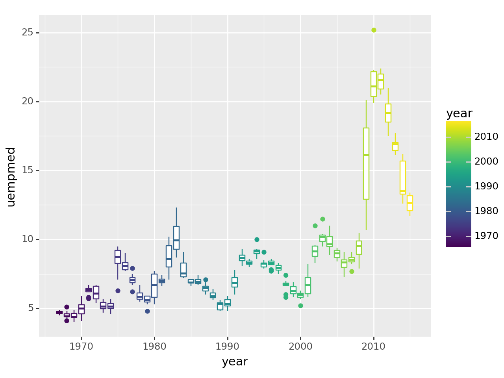

import pandas as pd
import plotnine as p9
from plotnine import *
from plotnine.data import *
import numpy as npDSA 554 3.0 Spatio-temporal Data Analysis
Time Series Analysis Using Python
Loading packages
Working with Built-in Data Set
economics data set
economics| date | pce | pop | psavert | uempmed | unemploy | |
|---|---|---|---|---|---|---|
| 0 | 1967-07-01 | 507.4 | 198712 | 12.5 | 4.5 | 2944 |
| 1 | 1967-08-01 | 510.5 | 198911 | 12.5 | 4.7 | 2945 |
| 2 | 1967-09-01 | 516.3 | 199113 | 11.7 | 4.6 | 2958 |
| 3 | 1967-10-01 | 512.9 | 199311 | 12.5 | 4.9 | 3143 |
| 4 | 1967-11-01 | 518.1 | 199498 | 12.5 | 4.7 | 3066 |
| ... | ... | ... | ... | ... | ... | ... |
| 569 | 2014-12-01 | 12122.0 | 320201 | 5.0 | 12.6 | 8688 |
| 570 | 2015-01-01 | 12080.8 | 320367 | 5.5 | 13.4 | 8979 |
| 571 | 2015-02-01 | 12095.9 | 320534 | 5.7 | 13.1 | 8705 |
| 572 | 2015-03-01 | 12161.5 | 320707 | 5.2 | 12.2 | 8575 |
| 573 | 2015-04-01 | 12158.9 | 320887 | 5.6 | 11.7 | 8549 |
574 rows × 6 columns
economics.info()<class 'pandas.core.frame.DataFrame'>
RangeIndex: 574 entries, 0 to 573
Data columns (total 6 columns):
# Column Non-Null Count Dtype
--- ------ -------------- -----
0 date 574 non-null datetime64[ns]
1 pce 574 non-null float64
2 pop 574 non-null int64
3 psavert 574 non-null float64
4 uempmed 574 non-null float64
5 unemploy 574 non-null int64
dtypes: datetime64[ns](1), float64(3), int64(2)
memory usage: 27.0 KBTime Series Data Wrangling Part 1: Create new time-based variables
Task 1: Create year and month columns
economics['year'] = economics['date'].dt.year
economics['month'] = economics['date'].dt.month
economics| date | pce | pop | psavert | uempmed | unemploy | year | month | |
|---|---|---|---|---|---|---|---|---|
| 0 | 1967-07-01 | 507.4 | 198712 | 12.5 | 4.5 | 2944 | 1967 | 7 |
| 1 | 1967-08-01 | 510.5 | 198911 | 12.5 | 4.7 | 2945 | 1967 | 8 |
| 2 | 1967-09-01 | 516.3 | 199113 | 11.7 | 4.6 | 2958 | 1967 | 9 |
| 3 | 1967-10-01 | 512.9 | 199311 | 12.5 | 4.9 | 3143 | 1967 | 10 |
| 4 | 1967-11-01 | 518.1 | 199498 | 12.5 | 4.7 | 3066 | 1967 | 11 |
| ... | ... | ... | ... | ... | ... | ... | ... | ... |
| 569 | 2014-12-01 | 12122.0 | 320201 | 5.0 | 12.6 | 8688 | 2014 | 12 |
| 570 | 2015-01-01 | 12080.8 | 320367 | 5.5 | 13.4 | 8979 | 2015 | 1 |
| 571 | 2015-02-01 | 12095.9 | 320534 | 5.7 | 13.1 | 8705 | 2015 | 2 |
| 572 | 2015-03-01 | 12161.5 | 320707 | 5.2 | 12.2 | 8575 | 2015 | 3 |
| 573 | 2015-04-01 | 12158.9 | 320887 | 5.6 | 11.7 | 8549 | 2015 | 4 |
574 rows × 8 columns
Time Series Visualization
Time Series Plots
Plot 1: Dot chart
%matplotlib inline
(
ggplot(economics, aes(x='date', y='uempmed'))
+ geom_point() # line plot
+ labs(x='date', y='median duration of unemployment, in week')
)Plot 2: Line chart
%matplotlib inline
(
ggplot(economics, aes(x='date', y='uempmed')) + geom_line()
)Plot 3: Dot and Line Chart
%matplotlib inline
(
ggplot(economics, aes(x='date', y='uempmed')) + geom_line() + geom_point()
)Change Point Size
ggplot(economics, aes(x='date', y='uempmed')) + geom_line() + geom_point(size=0.3)Change Point Colour
ggplot(economics, aes(x='date', y='uempmed')) + geom_line() + geom_point(size=0.3, colour="blue")Question 1: Which is the best? Plot1, Plot 2, or Plot 3
Seasonal plots
Seasonal plot with lines
ggplot(economics, aes(x='month', y='uempmed', color='year'))+geom_point()Seasonal plot with lines
ggplot(economics, aes(x='month', y='uempmed',group='year' ,color='year'))+geom_point()+geom_line()Question 2: What potential issues or areas for improvement can you identify in the plot?
Fix x-axis
ggplot(economics, aes(x='month', y='uempmed',group='year' ,color='year'))+geom_point()+geom_line()+scale_x_continuous(breaks=range(1, 13)) Add titles
ggplot(economics, aes(x='month', y='uempmed', group='year', color='year')) + geom_point() + geom_line() + scale_x_continuous(breaks=range(1, 13)) + labs(
title="Median Duration of Unemployment by Month",
x="Month",
y="Unemployment",
color="Year"
) + theme_minimal()Box-plots: monthly variation
ggplot(economics, aes(x='month', y='uempmed', group='month', color='month')) + geom_boxplot() + scale_x_continuous(breaks=range(1, 13))Box-plots: yearly variation
ggplot(economics, aes(x='year', y='uempmed', group='year', color='year')) + geom_boxplot() 
Exercise 1
Visualize Air Passengers dataset.
Step 1: Read data
airpassenger = pd.read_csv('AirPassengers.csv')Step 2: About the dataset
airpassenger| Month | #Passengers | |
|---|---|---|
| 0 | 1949-01 | 112 |
| 1 | 1949-02 | 118 |
| 2 | 1949-03 | 132 |
| 3 | 1949-04 | 129 |
| 4 | 1949-05 | 121 |
| ... | ... | ... |
| 139 | 1960-08 | 606 |
| 140 | 1960-09 | 508 |
| 141 | 1960-10 | 461 |
| 142 | 1960-11 | 390 |
| 143 | 1960-12 | 432 |
144 rows × 2 columns
airpassenger.head()| Month | #Passengers | |
|---|---|---|
| 0 | 1949-01 | 112 |
| 1 | 1949-02 | 118 |
| 2 | 1949-03 | 132 |
| 3 | 1949-04 | 129 |
| 4 | 1949-05 | 121 |
airpassenger.info()<class 'pandas.core.frame.DataFrame'>
RangeIndex: 144 entries, 0 to 143
Data columns (total 2 columns):
# Column Non-Null Count Dtype
--- ------ -------------- -----
0 Month 144 non-null object
1 #Passengers 144 non-null int64
dtypes: int64(1), object(1)
memory usage: 2.4+ KBTime Series Data Wrangling Part 2: Type Convertions
Cross Sectional Dataset
import pandas as pd
data = {
"ID": [1, 2, 3],
"calories": [420, 380, 390]
}
#load data into a DataFrame object:
dfc = pd.DataFrame(data)
dfc
dfc.info()<class 'pandas.core.frame.DataFrame'>
RangeIndex: 3 entries, 0 to 2
Data columns (total 2 columns):
# Column Non-Null Count Dtype
--- ------ -------------- -----
0 ID 3 non-null int64
1 calories 3 non-null int64
dtypes: int64(2)
memory usage: 180.0 bytesTime Series Dataset
data = {
"Year": [2019, 2020, 2021],
"Sales": [490, 980, 260]
}
#load data into a DataFrame object:
dft = pd.DataFrame(data)
dft
dft.info()<class 'pandas.core.frame.DataFrame'>
RangeIndex: 3 entries, 0 to 2
Data columns (total 2 columns):
# Column Non-Null Count Dtype
--- ------ -------------- -----
0 Year 3 non-null int64
1 Sales 3 non-null int64
dtypes: int64(2)
memory usage: 180.0 bytesAir Passenger Dataset
airpassenger.info()<class 'pandas.core.frame.DataFrame'>
RangeIndex: 144 entries, 0 to 143
Data columns (total 2 columns):
# Column Non-Null Count Dtype
--- ------ -------------- -----
0 Month 144 non-null object
1 #Passengers 144 non-null int64
dtypes: int64(1), object(1)
memory usage: 2.4+ KBTime Series Plot for Air Passenger Dataset
ggplot(airpassenger, aes(x='Month', y='#Passengers'))+geom_line()C:\Users\DELL\AppData\Local\Programs\Python\Python312\Lib\site-packages\plotnine\geoms\geom_path.py:111: PlotnineWarning: geom_path: Each group consist of only one observation. Do you need to adjust the group aesthetic?Convert to Time Column
from datetime import datetime
airpassenger['Month']= pd.to_datetime(airpassenger['Month'])
airpassenger.info()<class 'pandas.core.frame.DataFrame'>
RangeIndex: 144 entries, 0 to 143
Data columns (total 2 columns):
# Column Non-Null Count Dtype
--- ------ -------------- -----
0 Month 144 non-null datetime64[ns]
1 #Passengers 144 non-null int64
dtypes: datetime64[ns](1), int64(1)
memory usage: 2.4 KBIndex - Yearly
Method 1
index1 = pd.DatetimeIndex(['2012', '2013', '2014', '2015', '2016'])
data1 = pd.Series([123, 39, 78, 52, 110], index=index1)
data12012-01-01 123
2013-01-01 39
2014-01-01 78
2015-01-01 52
2016-01-01 110
dtype: int64Method 2
freq=‘AS’ for start of year
index2 = pd.date_range("2012", periods=5, freq='AS')
index2DatetimeIndex(['2012-01-01', '2013-01-01', '2014-01-01', '2015-01-01',
'2016-01-01'],
dtype='datetime64[ns]', freq='AS-JAN')data2 = pd.Series([123, 39, 78, 52, 110], index=index2)
data22012-01-01 123
2013-01-01 39
2014-01-01 78
2015-01-01 52
2016-01-01 110
Freq: AS-JAN, dtype: int64Method 3
freq=‘A’ end of year frequency
index3 = pd.date_range("2012", periods=5, freq='A')
index3DatetimeIndex(['2012-12-31', '2013-12-31', '2014-12-31', '2015-12-31',
'2016-12-31'],
dtype='datetime64[ns]', freq='A-DEC')data3 = pd.Series([123, 39, 78, 52, 110], index=index3)
data32012-12-31 123
2013-12-31 39
2014-12-31 78
2015-12-31 52
2016-12-31 110
Freq: A-DEC, dtype: int64Method 4
Annual indexing with arbitrary month
index4 = pd.date_range("2012", periods=5, freq='AS-NOV')
index4DatetimeIndex(['2012-11-01', '2013-11-01', '2014-11-01', '2015-11-01',
'2016-11-01'],
dtype='datetime64[ns]', freq='AS-NOV')data4 = pd.Series([123, 39, 78, 52, 110], index=index4)
data42012-11-01 123
2013-11-01 39
2014-11-01 78
2015-11-01 52
2016-11-01 110
Freq: AS-NOV, dtype: int64Method 5
Year Only
index = pd.period_range('2012-01', periods=8, freq='A')
indexPeriodIndex(['2012', '2013', '2014', '2015', '2016', '2017', '2018', '2019'], dtype='period[A-DEC]')Index - Monthly
Method 1
index = pd.period_range('2022-01', periods=8, freq='M')
indexPeriodIndex(['2022-01', '2022-02', '2022-03', '2022-04', '2022-05', '2022-06',
'2022-07', '2022-08'],
dtype='period[M]')Method 2
index = pd.period_range(start='2022-01-01', end='2022-08-02', freq='M')
indexPeriodIndex(['2022-01', '2022-02', '2022-03', '2022-04', '2022-05', '2022-06',
'2022-07', '2022-08'],
dtype='period[M]')Index - Quarterly
index = pd.period_range('2022-01', periods=8, freq='Q')
indexPeriodIndex(['2022Q1', '2022Q2', '2022Q3', '2022Q4', '2023Q1', '2023Q2',
'2023Q3', '2023Q4'],
dtype='period[Q-DEC]')Index - Daily
index = pd.period_range('2022-01-01', periods=8, freq='D')
indexPeriodIndex(['2022-01-01', '2022-01-02', '2022-01-03', '2022-01-04',
'2022-01-05', '2022-01-06', '2022-01-07', '2022-01-08'],
dtype='period[D]')Index - hourly
Method 1
Range of hourly timestamps
pd.period_range('2022-01', periods=8, freq='H')PeriodIndex(['2022-01-01 00:00', '2022-01-01 01:00', '2022-01-01 02:00',
'2022-01-01 03:00', '2022-01-01 04:00', '2022-01-01 05:00',
'2022-01-01 06:00', '2022-01-01 07:00'],
dtype='period[H]')Method 2
pd.timedelta_range(0, periods=10, freq='H')TimedeltaIndex(['0 days 00:00:00', '0 days 01:00:00', '0 days 02:00:00',
'0 days 03:00:00', '0 days 04:00:00', '0 days 05:00:00',
'0 days 06:00:00', '0 days 07:00:00', '0 days 08:00:00',
'0 days 09:00:00'],
dtype='timedelta64[ns]', freq='H')ACF and PACF plots
Preparing data
import pandas as pd
from matplotlib import pyplot as plt
from statsmodels.graphics.tsaplots import plot_acf, plot_pacf
# Select relevant data, index by Date
data = airpassenger[['Month', '#Passengers']].set_index(['Month'])
# Calculate the ACF (via statsmodel)
data| #Passengers | |
|---|---|
| Month | |
| 1949-01-01 | 112 |
| 1949-02-01 | 118 |
| 1949-03-01 | 132 |
| 1949-04-01 | 129 |
| 1949-05-01 | 121 |
| ... | ... |
| 1960-08-01 | 606 |
| 1960-09-01 | 508 |
| 1960-10-01 | 461 |
| 1960-11-01 | 390 |
| 1960-12-01 | 432 |
144 rows × 1 columns
ACF plot
data.info()<class 'pandas.core.frame.DataFrame'>
DatetimeIndex: 144 entries, 1949-01-01 to 1960-12-01
Data columns (total 1 columns):
# Column Non-Null Count Dtype
--- ------ -------------- -----
0 #Passengers 144 non-null int64
dtypes: int64(1)
memory usage: 2.2 KBfig, axes = plt.subplots(1, 2, figsize=(12, 5))
plot_acf(data, lags=50)
axes[0].set_title('ACF Plot')
plot_pacf(data, lags=50)
axes[1].set_title('PACF Plot')
plt.tight_layout()
plt.show()
Your turn: Obtain ACF and PACF plot for economics dataset
Generate Time Dependent Variables
Generate a sequence
%matplotlib inline
%config InlineBackend.figure_format = 'svg'
import warnings
warnings.filterwarnings('ignore')
import numpy as np
import pandas as pd
import datetime
from math import ceil
from plotnine import * # use python's ggplot2
ts = pd.date_range('1/1/2020', periods = 366) # generate 2020 all year data, sum up 366 days
tsDatetimeIndex(['2020-01-01', '2020-01-02', '2020-01-03', '2020-01-04',
'2020-01-05', '2020-01-06', '2020-01-07', '2020-01-08',
'2020-01-09', '2020-01-10',
...
'2020-12-22', '2020-12-23', '2020-12-24', '2020-12-25',
'2020-12-26', '2020-12-27', '2020-12-28', '2020-12-29',
'2020-12-30', '2020-12-31'],
dtype='datetime64[ns]', length=366, freq='D')convert Datetime into string
ts = pd.Series(ts).apply(str) extract YYYY-MM-DD date
new = ts.str.split(" ", n = 1, expand = True) # extract YYYY-MM-DD date
new| 0 | 1 | |
|---|---|---|
| 0 | 2020-01-01 | 00:00:00 |
| 1 | 2020-01-02 | 00:00:00 |
| 2 | 2020-01-03 | 00:00:00 |
| 3 | 2020-01-04 | 00:00:00 |
| 4 | 2020-01-05 | 00:00:00 |
| ... | ... | ... |
| 361 | 2020-12-27 | 00:00:00 |
| 362 | 2020-12-28 | 00:00:00 |
| 363 | 2020-12-29 | 00:00:00 |
| 364 | 2020-12-30 | 00:00:00 |
| 365 | 2020-12-31 | 00:00:00 |
366 rows × 2 columns
ts = new[0]
ts0 2020-01-01
1 2020-01-02
2 2020-01-03
3 2020-01-04
4 2020-01-05
...
361 2020-12-27
362 2020-12-28
363 2020-12-29
364 2020-12-30
365 2020-12-31
Name: 0, Length: 366, dtype: objectSlicing month from YYYY-MM-DD format
month = ts.apply(lambda x: int(x[5:7]))
month0 1
1 1
2 1
3 1
4 1
..
361 12
362 12
363 12
364 12
365 12
Name: 0, Length: 366, dtype: int64Slicing day from YYYY-MM-DD format
month = ts.apply(lambda x: int(x[8:10]))
month0 1
1 2
2 3
3 4
4 5
..
361 27
362 28
363 29
364 30
365 31
Name: 0, Length: 366, dtype: int64